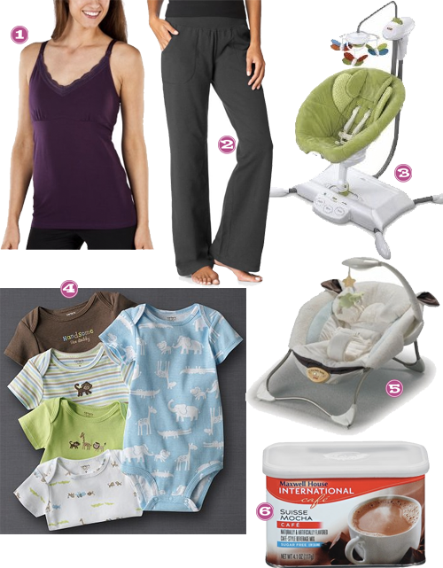

For all you bakers out there, I ran across these super-adorable pie birds here lately and had to pass them along…wouldn’t these be great “popping up” in your holiday pies!?!?!?!
Holiday Gift Guides: 2 Year Old Toddler Boys
December 8, 2010 by

As you can tell the Tipsy girls so far are moms to boys. Â We apologize to all of you that follow us that have little girls, we have no idea what little girls want for Christmas. Â We do however have an idea of what little boys may want. Â Here is what a certain little boy may or may not be getting for Christmas from Santa and various family members.
- Amazon, Radio Flyer My 1st Scooter
- Amazon, Melissa & Doug Farm Cube Puzzle
- Amazon, Magneatos
- Amazon, Bounceback RC Racer
- Toys R Us, Doodle Pro Basic
- Amazon, Toy Story Big Roarin’ Rex
- Amazon, Melissa & Doug Pizza Party
- Target, Toy Story 3 Shake ‘n Go Track
Holiday Gift Guides: Under $20
December 6, 2010 by
Working on a budget this year for Christmas? Â Have some stuff to buy for folks that are special to you, but don’t want to break the bank doing it?
I’ve got a few cute ideas here, a lot of them center around eating. Â Not sure what that says, but loving on these afforable options to show those special people you care this holiday season.

- Cheese Tray with Cutter – cute thing about this is that nifty little cutter. Â All in one, perfectness.
- Wine Chiller – perfect for entertaining or a night alone!
- Beer Glasses – what dude doesn’t a set of beer glasses made from recycled windshields?
- Condiment Dish with Stand – everything about this is so cute.
- Tyler Candle – great gift for any lovely lady on your list. Â Their scents are so unique and they last forever.
- Stoneware Vase – girls can’t have enough vases, very similar to our love for shoes.
Holiday Gift Guides: The Home Cook
December 3, 2010 by
I’ve said before that I’m not the cook in the family, I can cook but my husband loves to cook so I let him take the lead on that. Â So I know come Christmastime that he’s going to want some sort of cooking/kitchen/cutlery gadget or tool of some sort. Â I asked him what would be his cooking wishlist this year and these were the items that he hand picked.

- Star Wars Sandwich Cutters, Williams-Sonoma
- Eco Coffee Cup, Amazon
- Ad Hoc at Home, Amazon
- Microplane Rasp Grater, Williams-Sonoma
- Kyocera Red Ceramic Santoku Knife, Sur La Table
- Char-Broil Oil Less Infrared Turkey Fryer, Amazon
- SousVide Supreme Water Oven, Amazon
My Christmas Music Playlist 2010
December 2, 2010 by

Starting today this is my current holiday music playlist. Several of these are the same as last year because I definitely have some favs. But I threw in some new ones, specifically from the Glee Christmas CD and I LOVE LOVE LOVE them! What are you listening to?
- Grown-Up Christmas List by Michael Buble
- A Baby Changes Everything by Faith Hill
- Please Come Home For Christmas by Harry Connick Jr.
- The Season for Romance by Leann Womack
- Merry Christmas Strait to You by George Strait
- Hard Candy Christmas by Dolly Parton
- Merry Christmas Baby by Jessica Simpson featuring Willie Nelson
- Coming Home by Sugarland
- Deck the Rooftop by Glee: The Music
- Merry Christmas Darling by Glee: The Music
- JIngle Bells by Glee: The Music
- Christmas Must Be Something More by Taylor Swift
Movies for the Season
November 29, 2010 by

These are movies I try not to miss during the holidays…first choice being A Christmas Story. Â Though I have several parts of this movie that I find very memorable, for some reason I always think about the dogs coming in and ripping apart that turkey which leads to them eating Christmas dinner at the Chinese restaurant.
What is your favorite holiday movie and why?
- Amazon, National Lampoon’s Christmas Vacation
- Amazon, A Christmas Story
- Amazon, It’s a Wonderful Life
- Amazon, Elf
Dish Duty
November 22, 2010 by

I’m not exactly sure why, but I like festive dish towels in my kitchen. I don’t always go ALL Â OUT for holidays, but I do like to see those little decorative towels hanging there near my stove and sink. Here are some cute towels that could adorn my kitchen this year. They would make cute little gifts too.
- Crate and Barrel, Joy Dish Towel
- Amazon, Tag Whimsy Santa Dish Towels
- Crate and Barrel, Berries and Birds Dish Towel
- Amazon, Bright Christmas Tea Towel
- World Market, Reindeer Towels
Totally Awesome Cleaning Product
November 11, 2010 by
No seriously, the name of this product is Awesome, and it couldn’t be a more fitting name! My Aunt discovered this product at her local dollar store and swore by it…so when I encountered a tough stain on my carpet, I decided to try it out…I was shocked at how quickly it worked! And this isn’t just for carpet, it’s an all-purpose cleaner that I’ve used on clothes (ink spots in particular) and to get a grease stain off the floor of our garage!
This product is a MUST have for sure.
Hostess with the Mostest
November 8, 2010 by
If you haven’t heard, punch bowls are out… beverage dispensers are in. We tipsy gals always have to have one on hand for our showers, birthday parties, etc to show off our pretty punch in a stylish way.
- World Market, 6 qt glass water tank with wire rack
- Target, pedestal glass beverage jar
- Target, ceramic striped beverage dispenser
- Crate and Barrel, coldbeverage jar
- Walmart, fandango beverage dispenser
- Target, 3 gallon beverage dispenser
- Amazon, green tinged glass dispenser
- Amazon, hammered glass dispenser
Well, Hello Strangers
November 1, 2010 by
Ready or not… Im BACK! Back to the ole’ Tipsy grind. And I’d like to celebrate my return with two things:
A. This adorable picture of my sweet AJ.
B. This list of things that kept me sane/ allowed me to survive the last 4 weeks.

- Target, Full Sling Nursing Tank with Lace– These are like god’s gift to a nursing mom. Perfect thickness for extra support for the gals, long for us long bodied individuals and pop on a jacket or cardi and you don’t look quite like the frump you may feel like.
- Old Navy, Wide Leg Active Pants – I wore these home from the hospital, wear them as PJs at night and what the hay! Sometimes I keep them on all day long… I do have a newborn; I think I’m allowed.
- Amazon, Fisher Price I Glide Cradle and Swing– My lil gent loves this thing and will chill happily while mommy fixes dinner, does laundry or cat naps. Fisher Price, I can never thank you enough.
- Kohls, Carter’s Body Suits – My child is long and skinny and when he was swimming in all the newborn clothes we had, these babies were a life saver and fit him like a glove.
- Amazon, My Little Lamb Infant Seat– This goes anywhere I go and need a free set of hands. Like the bathroom, for instance. The vibrations and music set my little angel straight into slumber in most cases and allow mom to get a quick bathroom break or shower in. Plus, it’s so very soft and cozy. I wish they made one in my size.
- Amazon, Maxwell House International Cafe’ Suisse Mocha– I do not ever drink coffee or coffee related drinks. EVER. My mother brought this over to my house for her own personal enjoyment when she comes to visit the baby since I’m a coffee-less house. I tried it once and I’ve been like a crack addict over this stuff ever since. Good lawdy, I’m hooked.


Recent Comments